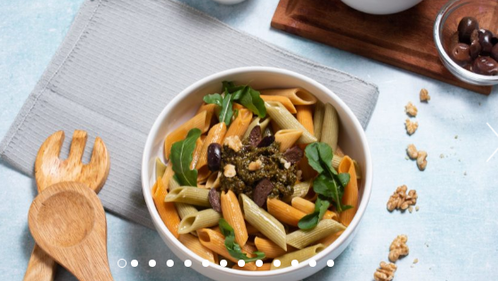

Ingredientes para 2 / 3 personas
250 gr de pasta seca Wakas
Tomates secos condimentados Recetas de entonces
Aceite de oliva Famiglia Dell Isola
Sal y pimienta
Queso parmesano
Aceitunas negras
Pesto de Albahaca Recetas de entonces
Instrucciones
1. Hervir la pasta.
2. Picar los tomates secos y las aceitunas.
3. Retirar la pasta y mezclar con los tomates secos picados, el pesto y las aceitunas.
4. Condimentar a gusto con aceite de oliva, sal y pimienta.

INGREDIENTES: 4 PERSONAS / 20 MIN
200 g de escarola
50 g de rúcula (sustituye escarola y rúcula por la lechuga que tengas)
2 naranjas
300 g de rulo de queso de cabra (rebaja calorías con queso fresco)
50 g de pistachos
5 cucharadas de aceite de oliva virgen
1 cucharada de vinagre de jerez
Sal
Cebollino (opcional)
PREPARACIÓN:
1. Trocea, lava y seca la escarola. Lava y seca la rúcula.
2. Corta una naranja y media en gajos y retira la piel.
Exprime la mitad restante para extraer el zumo.
3. Lava, seca y pica el cebollino.
4. Pela y pica los pistachos.
5. Prepara la vinagreta mezclando cuatro cucharadas de aceite con el vinagre,
dos cucharadas de zumo de naranja, una pizca de sal y dos cucharadas de cebollino picado.
6. Retira la corteza del rulo de queso de cabra, corta el queso en trozos,
úntate las manos con aceite para formar bolitas y rebózalas con los pistachos picados.
7. Reparte los ingredientes en los platos y aliña con la vinagreta.